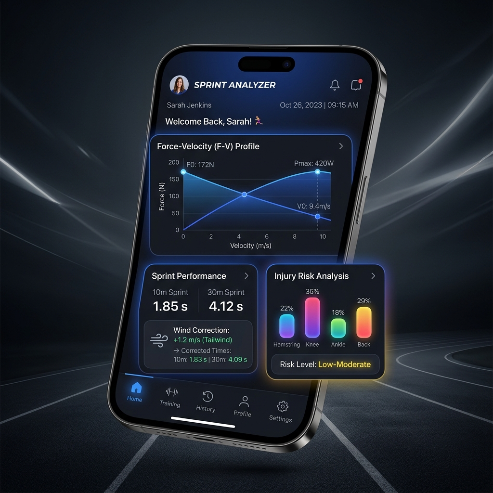

子どもたちの「速さ」を
データで科学し、
才能を呼び覚ます。
ジュニアチーム向けスプリントデータ管理プラットフォーム。プロ基準の光電管タイム計測と、スポーツバイオメカニクスに基づいた自動データ分析で、選手の成長と怪我防止をサポートします。
プラットフォーム登録選手数
導入済みのジュニアチーム数
光電管によるタイム測定精度

Sprint Analyzer を導入するメリット
感覚的なスピード評価から、根拠のあるデータ指導体制へアップデート
感覚から科学的なデータ指導へ
1/1000秒単位で計測可能な赤外線光電管レーザーと連携。指導者や選手の主観的な評価ではなく、客観的な数値データを基にした説得力のある指導が実現します。
選手個別のトレーニング自動処方
測定された走力データから、F-Vプロファイル（走りのタイプ診断）や30-15 IFT有酸素評価を行い、各選手に必要なトレーニングメニュー（HIITやスプリント練習）を自動で導き出します。
成長期の怪我防止と長期育成
座高や年齢などから将来予測身長やPHV（成長期ピーク）を判定し、過度な負荷を検知。また左右アジリティの非対称性から怪我の予兆を把握し、重大な故障から選手を守ります。
子どもたちの「速さ」を科学する
スプリントデータ管理プラットフォーム
運動生理学とスポーツバイオメカニクスを、すべてのジュニアチームへ。
高精度光電管スプリント計測 10m・30m
ストップウォッチによる手動計測には、どうしても測定者の反応速度による誤差（最大0.2秒以上）が生じます。Sprint Analyzerは、プロ仕様 of 赤外線光電管レーザーセンサーと完全連動。スタートから10m・30m通過時のタイムをミリ秒単位で正確に自動記録し、成長の軌跡を1ミリ秒の狂いもなく可視化します。
- 1/1000秒（ミリ秒）単位の超高精度レーザー計測
- 手動測定の誤差を完全に排除した真の実力評価
- 過去データとの自動比較による正確な成長推移の可視化
F-Vプロファイル分析 走りのタイプ診断
走る速度は「力（Force）」と「速度（Velocity）」の掛け合わせ。選手がスタートダッシュの「力」に優れているのか、それとも中盤以降の「最大速度」に優れているのかを、運動方程式から理論最大力（F0）と理論最大速度（V0）として算出。選手の弱点を自動判定し、最適トレーニングを自動処方します。
- スタートの押し出し能力（F0）の数値化
- トップスピード能力（V0）の数値化
- 「パワー型」「スピード型」の自動分類と最適メニュー提示
プロアジリティ 非対称性・怪我リスク可視化
左右への切り返し（5m-10m-5m）を測定し、右ターンと左ターンのタイム差から、筋肉や動きの「非対称性（左右の癖）」を可視化します。これにより、将来の怪我リスクを事前に察知し、パフォーマンス向上と同時に安全なスポーツライフをサポートします。
- 左右ターンタイムのミリ秒比較
- 非対称性インデックス（Asymmetry Index）の自動算出
- 怪我防止のための補強・ストレッチメニュー処方
30-15 IFT 有酸素評価 HIIT処方機能
近代フットボールやバスケットボールなどで必須とされる「30-15 IFT（間欠的往復ランテスト）」に対応。アプリ内蔵の専用有酸素タイマーが音でペースをガイドし、選手のスタミナを数値化（VIFT）。方向転換時の減速ペナルティを自動計算した、チーム個別・選手個別の「8週間高強度インターバルトレーニング（HIIT）メニュー」を処方します。
- 音響ガイドによる正確な30-15 IFT計測
- 方向転換（COD）の減速負荷を自動補正
- 測定データ直結の8週間HIITスケジュール自動生成
強度: 95% VIFT | 15秒オン / 15秒オフ × 10本
PHV発育・将来身長予測 安全な成長指導
子供たちの「骨の成長期ステージ」を推定し、現在が最も骨が伸びる時期（PHV: Peak Height Velocity）なのかどうかを判定。両親の身長データと現在の身長・座高から、将来の成人身長を予測します。これにより、過度な負荷をかける練習を避け、怪我を防ぎながら長期的な育成プランを組み立てることができます。
- 現在の骨の発育年齢（PHV年齢）の推定
- 両親の遺伝子データを加味した成人身長予測
- オーバートレーニングを防ぐ負荷自動警告
チーム導入プラン
チームの規模や指導形態に合わせ、データ活用をスタートできます
チームサブスク ＆ パートナー共創プラン
¥9,800〜 / 月（税込）
所属選手全員のスプリントデータをクラウドで一括管理し、科学的アプローチを毎日の指導へ導入できます。
- 所属選手全員のスプリントデータ一元管理（クラウド）
- F-Vプロファイル＆弱点診断・練習メニュー自動処方
- 左右アジリティ非対称性・怪我リスク判定
- 30-15 IFTに基づく8週間HIITメニュー自動処方
- 将来身長予測＆PHV発育期安全指導アラート
- 売上の一部を沖縄の「AWAKE無料計測会」の運営費へ寄付
- HPおよび活動レポートでの「協賛パートナー」名誉掲載
チームサブスク導入＆支援の3ステップ
お問い合わせ・相談
LINEまたはお問い合わせフォームより、お気軽にご連絡ください。チームの現在の測定方法や課題、支援の仕組みについてご説明します。
無料の出張デモ測定
専門スタッフがチームの練習場所へ直接お伺いし、実際の機材を使ってデモ測定会を実施。使い心地とデータ指導の効果を体験していただきます。
契約 ＆ パートナーシップ開始
チームアカウントを作成し、所属選手のデータ管理を開始。指導のDX化がスタートするとともに、協賛パートナーとしてAWAKE無料計測会の運営を支えていただけます。
スプリント指導のDX化、
はじめませんか？
スプリント分析アプリ（Sprint Analyzer）のチーム導入相談、デモ測定のご依頼、ご協賛に関するお問い合わせなど、お気軽にご連絡ください。